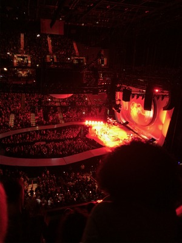

There are many activities to do during your stay in South Florida. Whether you are staying in Palm Beach County, Broward County or Miami Dade County- all things to do are within an hour drive of each other so making the trip would not be hard. Both the adventurous and/or touristy type of person have many different options of what a day would look like including great restaurant recommendations featured on our Where To Eat page.
Below is a list of activities to enjoy during the day accompanied by photos-
Bike riding along A1A
Beach
Hotel Pool
Rent A Boat
Day Cruise
Rent Jet Skis
Farmers Market
Aventura Mall
Shopping on Atlantic Ave or Worth Avenue
The Girls Strawberry Picking
Morikami Muesuem
Paragliding
Next is a list of some great things to do for night life-
Concerts in Mizner Park
Nightclubs and Bars
Watch the sunset
Christmas lights
Escape rooms
SilverBall Arcade Museum
Top Golf
Boomers Boca Raton
Strike 10 Bowling
K1 Speed Go Karting
Throw Social
Hard Rock Guitar Hotel and Casino
